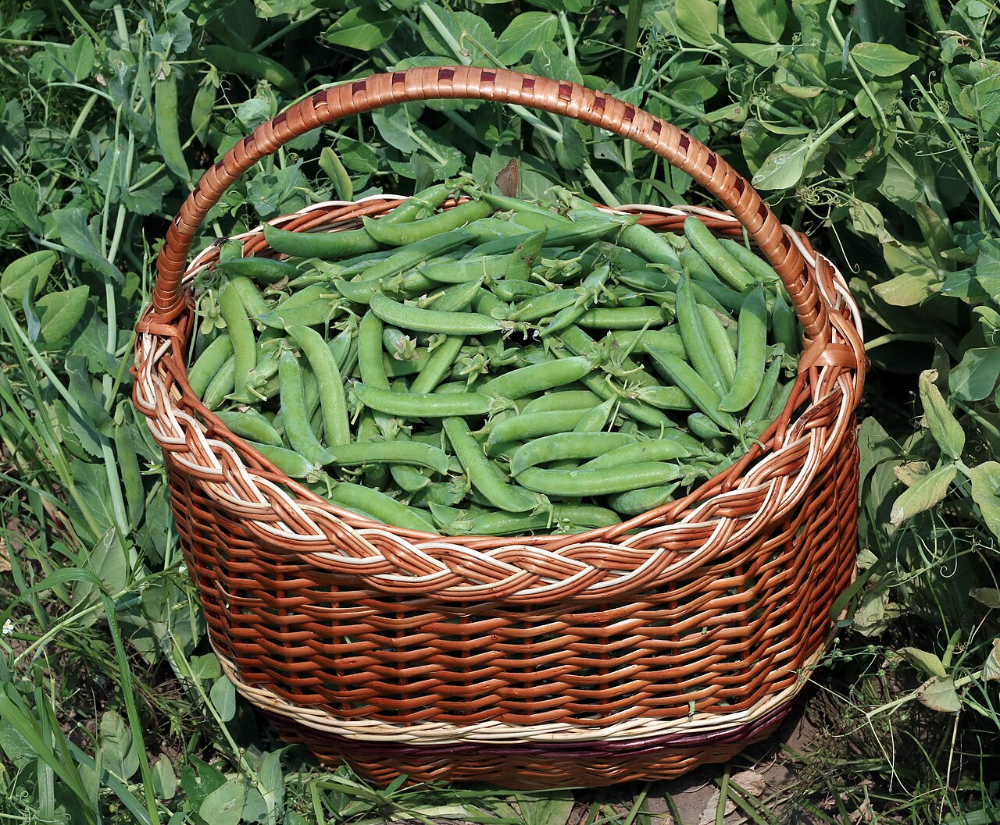

孟德尔的豌豆杂交实验（一）（下）：分离定律的应用
本期导读
孟德尔的豌豆杂交实验（一）（下） · 判断 · 计算

视频原话 · 导读3 句
- 同学们好！这节课梳理人教版必修二第一章第一节的下半部分——分离定律的应用。7.8s
- 高考常考显隐性和纯合子的判断、连续自交、自由交配和致死问题的计算。7.6s
- 我们按八个考点梳理，每个考点都讲清楚怎么考、怎么做。5.5s
分离定律的内容01#
体细胞中，控制同一性状的遗传因子成对存在、不相融合；
在形成配子时，成对的遗传因子发生分离，分别进入不同的配子中，随配子遗传给后代
真核生物
原核生物、病毒不遵循
有性生殖
无性生殖不遵循
细胞核遗传
细胞质遗传不遵循
一对相对性状
一对遗传因子控制
易错
原核生物、病毒、细胞质遗传不遵循分离定律；分离发生在形成配子时，不是受精时
视频原话4 句
- 考点一，分离定律的内容：在生物的体细胞中，控制同一性状的遗传因子成对存在，不相融合；9.2s
- 在形成配子时，成对的遗传因子发生分离，分别进入不同的配子中，随配子遗传给后代。8.5s
- 适用范围：真核生物、有性生殖、细胞核遗传，研究的是一对相对性状。7.3s
- 易错：原核生物、病毒和细胞质遗传都不遵循分离定律；分离发生在形成配子时，不是受精时。9.9s
显隐性的判断02#
定义法（杂交）
纯合亲本：高茎 × 矮茎
→ F1 全为高茎
→ 高茎为显性
→ F1 全为高茎
→ 高茎为显性
F1 表现出的性状是显性
性状分离法（自交）
高茎 × 高茎
→ 后代出现矮茎
→ 矮茎为隐性
→ 后代出现矮茎
→ 矮茎为隐性
亲本没有、子代新出现的是隐性
比例法
后代 高∶矮 = 3∶1
→ 占 3 的为显性
→ 占 3 的为显性
适用于大量统计的结果
解题方法
无中生有为隐性：“无”＝亲本没有，“有”＝子代出现
试一试：用定义法、性状分离法或比例法说出显性性状。
- 1纯合高茎豌豆与纯合矮茎豌豆杂交，F₁ 全为高茎高茎为显性：F₁ 表现出的那个亲本性状就是显性性状。
- 2纯合高茎豌豆与纯合矮茎豌豆杂交，F₁ 全为矮茎矮茎为显性：不要背“高茎显性”，要看 F₁ 实际表现出谁。
- 3一株高茎豌豆自交，后代中出现了高茎和矮茎高茎为显性：亲本没有、子代新出现的矮茎是隐性，“无中生有”中的“有”为隐性。
- 4一只黑色豚鼠与一只白色豚鼠杂交，后代全为白色白色为显性：定义法——F₁ 全表现白色，白色即显性。
视频原话4 句
- 考点二，显隐性的判断。定义法：相对性状的纯合亲本杂交，F1 表现出来的就是显性性状。9.5s
- 性状分离法：两个性状相同的亲本交配，后代出现了新的性状，新出现的就是隐性性状。8.6s
- 比例法：后代出现 3∶1，占 3 的是显性性状。5.0s
- 解题方法：一句口诀——无中生有为隐性。“无”是亲本没有，“有”是子代出现。7.5s
纯合子与杂合子鉴定03#
| 方法 | 操作 | 结果判断 |
|---|---|---|
| 自交法 | 待测个体自交 | 出现性状分离 → 杂合子 |
| 测交法 | 与隐性纯合子杂交 | 出现隐性个体 → 杂合子 |
| 花粉鉴定法 | 花粉加碘液染色观察 | 两种花粉各占一半 → 杂合子 |
考法
植物最简便：自交；动物常用：测交（与多只隐性个体交配，保证子代数量多）
视频原话4 句
- 考点三，纯合子与杂合子的鉴定。自交法：后代出现性状分离的是杂合子，不出现的是纯合子。9.6s
- 测交法：与隐性纯合子杂交，后代全是显性的是纯合子，出现隐性的是杂合子。8.0s
- 花粉鉴定法：比如糯性和非糯性，花粉遇碘呈两种颜色，各占一半，说明是杂合子。8.5s
- 考法：问最简便的方法。植物用自交最简便；动物多用测交，并且要多找几只隐性个体，后代才够多。10.3s
由子代推亲代04#
| 子代表现 | 亲代基因型 |
|---|---|
| 显性∶隐性 = 3∶1 | Aa × Aa |
| 显性∶隐性 = 1∶1 | Aa × aa |
| 全为显性 | AA × 任意 |
| 全为隐性 | aa × aa |
解题方法
隐性纯合突破法：子代出现 aa → 双亲各提供一个 a，先填确定的 a，再推其余
视频原话4 句
- 考点四，由子代推亲代。子代显性∶隐性 = 3∶1，亲代是 Aa × Aa。9.0s
- 子代 1∶1，亲代是 Aa × aa，相当于测交。6.0s
- 子代全是显性，至少一方是 AA；子代全是隐性，双亲都是 aa。8.2s
- 解题方法：隐性纯合突破法——子代出现 aa，说明双亲各提供了一个 a，先把能确定的 a 填进去。10.0s
杂合子连续自交05#
杂合子 = (1/2)n
纯合子 = 1 − (1/2)n
显性纯合子 = [1 − (1/2)n] / 2
考法
杂交育种靠连续自交提高纯合度；若每代淘汰隐性个体，Fn 中显性纯合子占 (2n−1)/(2n+1)
视频原话4 句
- 考点五，杂合子连续自交。Aa 每自交一代，杂合子就减少一半，Fn 中杂合子占 (1/2)n。11.1s
- 纯合子占 1 − (1/2)n，越来越接近 1；显性纯合子和隐性纯合子各占一半。8.7s
- 所以三条曲线：杂合子趋近 0，纯合子趋近 1，显性纯合子趋近 1/2。7.9s
- 考法：杂交育种靠连续自交提高纯合度。易错：如果每代淘汰隐性个体，Fn 中显性纯合子占 (2n−1)/(2n+1)。13.3s
自交与自由交配06#
群体中 AA∶Aa = 1∶2，即 AA 占 1/3，Aa 占 2/3
自交
只有 Aa 自交产生 aa：
aa = 2/3 × 1/4 = 1/6
AA∶Aa∶aa = 3∶2∶1
aa = 2/3 × 1/4 = 1/6
AA∶Aa∶aa = 3∶2∶1
同种基因型之间交配
自由交配（配子法）
配子 A = 2/3，a = 1/3
aa = 1/3 × 1/3 = 1/9
AA∶Aa∶aa = 4∶4∶1
aa = 1/3 × 1/3 = 1/9
AA∶Aa∶aa = 4∶4∶1
所有个体随机交配
易错
自交 ≠ 自由交配；自由交配用配子法：先算配子比例，再随机结合，不要逐对相加
视频原话4 句
- 考点六，自交与自由交配。例：一个群体中 AA∶Aa = 1∶2，也就是 AA 占 1/3，Aa 占 2/3。13.3s
- 自交：只有 Aa 自交会产生 aa，aa = 2/3 × 1/4 = 1/6，后代 AA∶Aa∶aa = 3∶2∶1。11.5s
- 自由交配用配子法：A 配子占 2/3，a 配子占 1/3，aa = 1/3 × 1/3 = 1/9，后代 4∶4∶1。13.2s
- 易错：自交是同种基因型之间交配；自由交配是所有个体随机交配，用配子法最快，不要逐对相加。10.0s
异常分离比07#
| 原因 | 子代比例 | 说明 |
|---|---|---|
| 显性纯合致死 | Aa∶aa = 2∶1 | AA 死亡（如黄色鼠） |
| 不完全显性 | 1∶2∶1 | 杂合子表现为中间性状 |
| 隐性纯合致死 | 全为显性（1∶2） | aa 死亡 |
| 含 a 的花粉致死 | AA∶Aa = 1∶1 | 雄配子只有 A |
解题方法
先按正常的 1∶2∶1 写出，再划掉致死的部分，重新计算比例
视频原话5 句
- 考点七，异常分离比。正常 Aa × Aa 后代是 1∶2∶1。如果显性纯合致死，AA 死掉，剩下 Aa∶aa = 2∶1。15.4s
- 不完全显性：杂合子表现为中间性状，比如红花、粉红花、白花 = 1∶2∶1。8.3s
- 隐性纯合致死：后代只有显性个体，AA∶Aa = 1∶2。7.2s
- 配子致死：比如含 a 的花粉不育，Aa 自交后代 AA∶Aa = 1∶1，全是显性。10.0s
- 解题方法：先按正常的 1∶2∶1 写出来，再划掉致死的部分，重新算比例。7.3s
遗传概率计算08#
- 1双亲正常生出患病女儿：无中生有为隐性
- 2女儿患病、父亲正常 → 常染色体隐性，双亲均为 Aa
- 3正常个体中 AA∶Aa = 1∶2 → Ⅱ-2 为 Aa 的概率 2/3
- 4Ⅱ-2 × aa → 患病孩子 = 2/3 × 1/2 = 1/3
易错
已知表型正常，要在正常个体中算比例：是 2/3，不是 1/2，也不是 1/4
视频原话5 句
- 考点八，遗传概率计算。系谱图中，双亲正常，生了一个患病女儿——无中生有为隐性。8.7s
- 女儿患病而父亲正常，所以是常染色体隐性遗传，双亲都是 Aa。7.3s
- 那么她的正常弟弟，是 AA 还是 Aa？在正常个体中 AA∶Aa = 1∶2，所以是携带者的概率是 2/3。12.8s
- 如果他和患者 aa 结婚，生出患病孩子的概率是 2/3 × 1/2 = 1/3。8.4s
- 易错：已知表型正常时，要在正常个体里算比例，是 2/3，不是 1/2，也不是 1/4。9.3s
易错速查✓
先自己判断，再点按钮查看对错与解析。
- 1分离定律也适用于大肠杆菌等原核生物说法错误：只适用于真核生物有性生殖的细胞核遗传
- 2鉴定一株高茎豌豆是否纯合，最简便的方法是测交说法错误：最简便的是自交
- 3Aa 连续自交 3 代，F3 中杂合子占 1/8说法正确。
- 4AA∶Aa = 1∶2 的群体自由交配，后代 aa 占 1/6说法错误：自由交配 aa 占 1/9，自交才是 1/6
- 5黄鼠与黄鼠交配，后代黄∶灰 = 2∶1，说明显性纯合致死说法正确。
- 6双亲正常生出患病女儿，其正常弟弟是携带者的概率为 1/2说法错误：应为 2/3
先判显隐，再写配子，最后算比例！
视频原话 · 易错速查5 句
- 最后，用六道判断题检验一下。3.6s
- 判断一？错，只适用于真核生物有性生殖的细胞核遗传。判断二？错，最简便的是自交。9.9s
- 判断三？对，(1/2)3 = 1/8。判断四？错，自由交配 aa 占 1/9。10.3s
- 判断五？对。判断六？错，正常弟弟是携带者的概率是 2/3。8.2s
- 八个考点串成一条线：先判显隐，再写配子，最后算比例。我们下期再见！7.8s
图片来源
图片来源：Wikimedia Commons —— George Chernilevsky《Peas in pods 2016 G1》Public domain
Photo: George Chernilevsky, Public domain